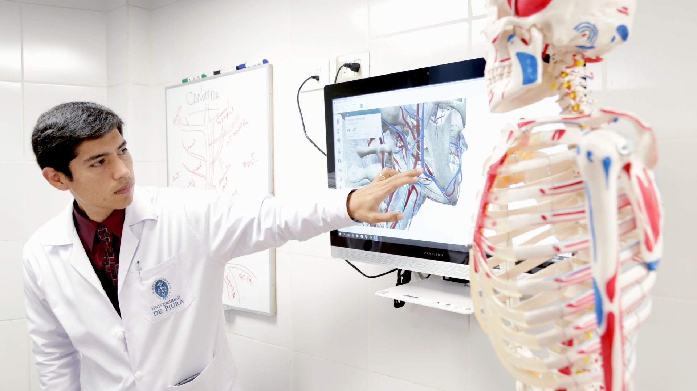

Enfocate
Para seleccionar un marco metodológico adecuado para nuestra investigación, debemos tener conocimientos previos, por lo que es necesario aclarar los inicios de este tema, en los años 377 A.C, Hipócrates realizo sus primeros aportes, en los que exponen que el proceso investigativo tiene como propósito final generar conocimiento resolviendo la problemática planteada, por medio de los objetivos y preguntas redactadas anteriormente, para poder buscar soluciones a la problemática.(Félix, 2014)
UML - Based Web: Plantea un enfoque iterativo y progresivo cuyas actividades fundamentales son el análisis de requisitos y el diseño conceptual, de la navegación y la presentación.(Gómez & Cabrera, 2017)
Seleccionar una metodología adecuada para el desarrollo de nuestra página web es uno de los puntos más importantes. Es por eso que, elegimos la mencionada anteriormente, donde lo más importante es tener un diseño y una navegación fácil de comprender para quienes visiten la página y estos tengan una experiencia placentera.
Sitio educativo: Los portales educativos son sitios web con fines pedagógicos, que ofrecen una amplia gama de recursos y servicios tales como: cursos gratuitos, guías de apoyo, comunidades de práctica, bancos de contenido etc. Su principal objetivo es universalizar el conocimiento y brindar acceso a contenidos de calidad para todos.(Hernandéz, 2013)
Método inductivo o empírico: a partir de la experiencia, se pueden generar algunas conclusiones acerca de las interrogantes planteadas anteriormente en la formulación del problema.(Moreno, 2013)
Se llevará a cabo la aplicación del método inductivo o empírico; puesto que, recibir información de algunos egresados de la carrera, con experiencia del tema, sería bastante beneficioso para poder tener una respuesta a las distintas dudas que puedan surgir con este trabajo de investigación.
Entrevista: Este instrumento de levantamiento de información se basa en la recolección de datos por medio de un diálogo. La entrevista nos facilita la recolección de experiencias personales alrededor de la odontología, ampliando los diferentes enfoques que puede tener esta disciplina.
lugar e información del proyecto
Sitio: Colegio león de greiffLugar: Carrera 12A, Cl. 51 #12A-30
Población: Estudiantes de grado 11